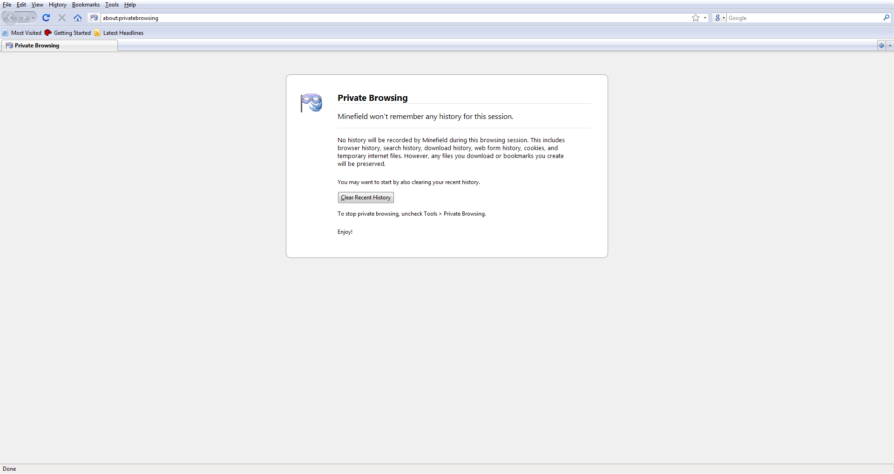
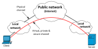
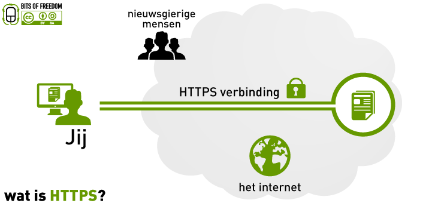

Online Safety & Privacy
Privacy Settings and Safe Browsing
Watch & Learn
- How Cookies Can Track You (Simply Explained, 8 min)
- VPN (Virtual Private Network) Explained (PowerCert, 7 min)
- The Internet: Encryption & Public Keys (Code.org, 7 min)
- The Internet: Cybersecurity & Crime (Code.org, 5 min)
Video Quiz
In the Simply Explained “How Cookies Can Track You” video, what is the main purpose of a browser cookie?
In the PowerCert “VPN Explained” video, what does a VPN hide from the websites you visit?
In the PowerCert video, what is one practical reason people use a VPN besides privacy?
In the Code.org “Encryption & Public Keys” video, what analogy is used to explain public key encryption?
In the Code.org “Cybersecurity & Crime” video, what type of attack tricks users into revealing their personal information by pretending to be a trusted entity?
In the Code.org “Cybersecurity & Crime” video, what is described as one of the most common ways criminals gain access to people’s accounts?
Theory

Browser Privacy Settings: Cookies, Do-Not-Track, and Private Mode
Every browser stores small text files called cookies on your device. Cookies are how a site remembers your login, your language preference, or what’s in your shopping cart. Some cookies are helpful — without them you’d have to sign in on every single page load. Others, known as third-party cookies, are placed by advertisers and data brokers to track you across many different websites, building a profile of your interests and habits.
Your browser gives you controls over this. In Chrome, Firefox, Edge, or Safari you can open the privacy settings to block third-party cookies, clear stored cookies, and manage site permissions for your camera, microphone, and location. There is also a Do Not Track header — a signal your browser sends to websites asking them not to track you. The catch: it is a polite request, not a command. Most websites simply ignore it. That is why blocking third-party cookies directly is more effective than relying on Do Not Track alone.

What Incognito Mode Actually Does (and Doesn’t Do)
Incognito mode (called “Private Browsing” in Firefox, “InPrivate” in Edge) opens a temporary session that does not save your browsing history, cookies, or form data after you close the window. It is useful when you share a device with family and don’t want the next person to see which sites you visited, or when you want to test a website without cached data interfering.
Here is what incognito mode does not do: it does not hide your activity from your Internet service provider, your school or employer network, or the websites you visit. Your IP address is still visible. If you sign into Google, Facebook, or any other account while in incognito, that service still records your activity. Incognito is local privacy — it keeps your browsing history off the device — but it is not anonymity online.

Virtual Private Networks: What They Are, When They Help, When They Don’t
A VPN creates an encrypted tunnel between your device and a server run by the VPN provider. All your Internet traffic goes through that tunnel first, then exits from the VPN server to the wider Internet. This means your ISP can see that you are connected to the VPN, but it cannot read which sites you visit. Meanwhile, the websites you visit see the VPN server’s IP address instead of yours.
VPNs are genuinely useful on public Wi-Fi networks (coffee shops, airports) where attackers on the same network could snoop on unencrypted traffic. They also let you appear to be in a different country, which is why some people use them to access region-locked content.
However, a VPN is not a magic invisibility cloak. You are shifting trust from your ISP to the VPN company — if that company logs your activity or has weak security, your data is still exposed. A VPN also does not protect you from phishing, malware, or tracking cookies. If you log into your Google account through a VPN, Google still knows it is you.

HTTPS Everywhere and Safe Downloads
HTTPS encrypts data between your browser and the website’s server using TLS (Transport Layer Security). When you see a padlock icon in your browser’s address bar, it means the connection is encrypted — anyone intercepting the traffic sees only scrambled data. Today, over 85% of all web traffic uses HTTPS, and browsers actively warn you when a site uses plain HTTP.
HTTPS confirms that data in transit is encrypted, but it does not guarantee the site itself is safe. A phishing site can have a valid HTTPS certificate — the padlock only means the connection is encrypted, not that the people on the other end are trustworthy.
Safe downloading follows similar logic. Before downloading any file, check that the source is an official
website or a well-known repository. Avoid executable files (.exe, .bat,
.msi) from unknown sources. When your browser or operating system warns you about a file, take
the warning seriously. Keep your
antivirus software
up to date, and scan downloaded files before opening them. Free software sites full of flashing “Download
Now” buttons are a classic trap — the real download link is usually a small, plain text link
somewhere on the page.
Theory Quiz
What is the main difference between first-party cookies and third-party cookies?
Your friend says: “I used incognito mode, so my school can’t see which sites I visited.” Is this correct?
When is a VPN most useful?
A website shows a padlock icon in the address bar. What does this guarantee?
Which of the following is the safest approach to downloading software?
Build: “Is This Site Safe?” Checker
Create an HTML/CSS/JS page where a user enters a URL and gets a safety score with explanations:
- An input field for the URL and a “Check Safety” button.
- JavaScript analyzes the URL for these signals:
- Does it start with
https://? (+20 points) or justhttp://? (+0) - Is the domain short and readable (under 30 characters)? (+20) or suspiciously long? (+0)
- Does it contain suspicious characters like
@, double hyphens, or excessive dots? (−10 each) - Does it use a known safe TLD like
.com,.org,.edu,.gov? (+20) or an unusual one? (+0) - Does it look like an IP address instead of a domain name? (−20)
- Does it start with
- Display a total score (0–100) with a color-coded bar: green for safe, yellow for caution, red for risky.
- Below the score, list each check with a pass/fail icon and a short explanation of why it matters.
- Add a “Clear” button to reset and try another URL.
Requirements:
- Parse the URL using JavaScript’s built-in
URLconstructor (wrap intry/catchfor invalid URLs) - Style the score bar with CSS transitions so it fills smoothly
- Each check result should show a checkmark or warning icon
- Display a friendly message explaining the overall result (“This URL looks safe” / “Proceed with caution” / “This URL has red flags”)
Solve it in JSFiddle:
Open JSFiddlePaste your HTML into the HTML panel, CSS into the CSS panel, and JS into the JavaScript panel. Click “Run” to see the result!